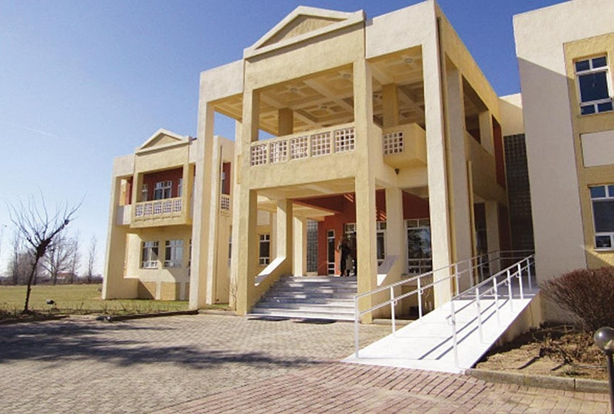
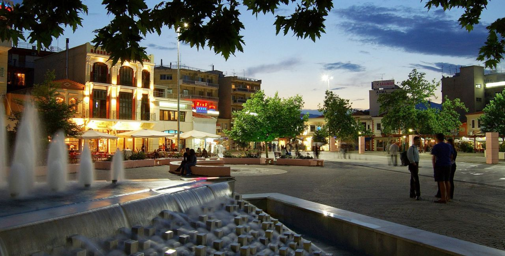

Democritus University of Thrace & Komotini
Democritus University of Thrace

The Democritus University of Thrace was founded in 1973 and opened its gates for the academic year 1974-1975 with the starting of the Department of Civil Engineering in Xanthi and the Department of Law in Komotini. It was named after the
ancient Greek philosopher Democritus, who was born in Abdera, Xanthi. The administrative headquarters are based in Komotini, which is also the capital of the administrative region of Eastern Macedonia and Thrace, while administrative services
are provided in all four of the city-centers (Xanthi, Komotini, Alexandroupoli, Orestiada).
The Democritus University of Thrace has been, since its establishment in 1973, the first Greek regional polyhedral university, while its necessity wasn’t exclusively limited to educational purposes.
Its functioning through its polyhedralism firstly in the cities of Xanthi and Komotini and later at Alexandroupoulis and Orestiada,in addition to its educational and research activities, has been an essential factor in the economic growth
of the Region of Thrace. Simultaneously, the University contributed in the enhancing of the national and cultural nature of the wider area of Thrace and the upgrade of the biotic and social status with both direct and indirect actions.

The Democritus University of Thrace has the following Schools and Departments:
I. School of Engineering (Xanthi)
• Department of Civil Engineering
• Department of Electrical
and Computer
• Department of Environmental Engineering
• Department of Architecture
• Department of Production and Management Engineering
II. School of Classics
and Humanities (Komotini)
• Department of History and Ethnology
• Department of Philology
• Department of Languages, Literature and Culture of the Black Sea Countries
III. School of Law (Komotini)
• Department of Law
IV. Physical Education and Sport Sciences (Komotini)
• Department of Physical Education and Sport Sciences
V. School of Economic,
Political and Social Sciences (Komotini)
• Department of Social Work
• Department of Social Administration
• Department of Political Sciences
•
Department of Economics
VI. School of Health Sciences (Alexandroupoli)
• Department of Medicine
• Department of Molecular Biology and Genetics
VII. School of Education (Alexandroupoli)
• Department of Primary Level Education
• Department of Education Sciences in Early Childhood
VIII. School of Agriculture and Forestry (Orestiada)
• Department
of Agricultural Development
• Department of Forestry and Management of the Environment and Natural Resources
City of Komotini

Komotini is the capital city of Thrace, a region in northeastern Greece. Its name originates by the one given by the Ottomans (Gümülcine) and historians track down its existence back in 5th century BC.

It is a multicultural city because of its location and the large number of Muslims who remain there as an exception to the population exchange as described in the Treaty of Lausanne. It is also full of life, since it is home to several
departments of the Democritus University of Thrace and is packed with its students. Despite the city's cloudy weather that gave her the name 'Little London' by the students, she does not lack the fun. While walking it one finds harmonious
coexistence of modern and picturesque houses and streets. The most characteristic attraction is the Central Heroon (Spathi), a monument to the fallen of World War II, which adorns the center of the city.
Thracing on MIC
Thracing on MIC (Model International Crises) is a simulation conference on international organizations and crises which is going to take place in the city of Komotini during the first week of December 2021 and is addressed to students
who love international law, diplomacy and politics. Participating delegates are invited to play the role of a representative of a state entity in international committees and to manage a simulated crisis of international scope, using the rules
of international law and their diplomatic skills. More specifically, an international crisis environment will be created, evolving in real time, which will be examined by each of the committees to be simulated (UNGA-Emergency Meeting "United
for Peace", NATO, Council of Europe ,Council of the European union ,International court of justice, European Court of Justice) to the extent and from the point of view that its jurisdiction allows it. The organization of this academic event
is an initiative of the newly established association "Visualizing in Thrace:forum of International Law and Politics", based in Komotini. The idea of the conference and the association itself was initiated by some students, who, driven by
their love for diplomacy and international law, but also for Komotini itself, decided to create a group for fellow students with common interests. The project of Thracing on MIC is part and purpose of the association from the very beginning,
as is the prominence of Komotini and the Democritus University of Thrace as a fertile ground for academic dialogue and reflection.
Visualizing in Thrace
Visualizing in Thrace: Forum of Int. Law and Politics is a politically neutral association of students of DUTH (mainly for the faculties of the city of Komotini). Its object is to organize events, seminars and conferences (or webinars)
on the main topic of international law and international politics (in a broad sense), without being strictly limited to them. That kind of entity did not exist in Komotini so students with such interests had to resort to other associations
in Athens or Thessaloniki, in order to educate themselves or socialize with people with similar interests. In that sense, promoting the city of Komotini and Democritus University of Thrace, by creating for the first time an environment for
growth and development in the field of international law is this association's main goal.